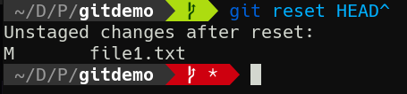

1-5: Fixing Mistakes, Pt. 1
So far our commits have been nice a linear, with no mistakes. But a quick look at GitHub Commits will tell you that's not always the case.
So let's get into some trouble and learn how to get out of it. We'll begin by creating a file and committing it, even though we don't actually want it.
echo "I shouldn't be here!" > mistake.txt
git add mistake.txt
git commit -m "Add a mistake"
Removing Files
So of course this is a bit contrived, but it's not uncommon to decide we no longer want a file in our repo. If we simply rm the file, Git will notice the file's gone, but you'll still awkwardly have to git add the now-missing file.
It's more appropriate in these situations to git rm <file>, which is what we'll do now. This will delete the file and stage the deletion for commit.
git rm mistake.txt
Notice that git status now shows a deleted event staged. Commit this change.
git commit -m "Remove mistake.txt"
There is also a git mv that will rename files and automatically stage the changes. In truth I often forget this one. Git is pretty good and recognizing renames/moves, which I add with git add.
Okay but what happens if we remove a file with rm and want it back?
rm file1.txt
"Taggart, you fool!" I hear you say. "We needed that file!"
No worries, friendo. Git knows about the file and has its contents in the depths of its archives. Because we didn't git rm it from the working tree, we can do the following:
git restore file1.txt
Et voilà. It's back! Git saves us from ourselves.
Going Back in Time
Since Git obviously stores files in its database, you might imagine it's possible to go back in time to prior states—and you'd be right. That's what git reset is for.
There's kind of a lot to git reset, and we'll be coming back to it. For now, let's make a single commit that we come to regret.
echo "I wish I hadn't done this" >> file1.txt
git commit -am "I'll come to regret this"
Welp. Here we are. Maybe we don't exactly regret this commit, but it was incomplete. We had more to do before actually committing this. We can pull this commit back (as long as we haven't sent it anywhere) and rework it. To do so, we run git reset <commit>. The commit is a commit hash we want to revert to. All changes after that commit will then become unstaged stages.
We've seen the term HEAD in git log output already. This is where it comes in handy. HEAD represents the most recent commit—like the "playhead" on tape player. We can refer to the most reset commit with HEAD. But of course, we want to go back before the most recent commit. Luckily, we can add a ^ to increment the HEAD by one. So HEAD^ means the penultimate commit.
Watch what happens when we reset to it.
git reset HEAD^

Look at that! Unstaged changes. You can use git diff to confirm that it's our new line that's now unstaged. We're now free to change the file and recommit as we like.
git reset can take any commit hash as an argument. All changes since that commit will then become unstaged changes. So while we just went back 2 commits with HEAD^, we could have gone all the way back to the first commit in git log, and everything we've done since then would have been unstaged changes!
Going --hard
One last important note about git reset. Implicitly, we are passing the --soft argument to it, which is why any changes past our target commit become unstaged changes. If, however, you really want to go permanently back in time, you can use git reset --hard <commit>. This will revert your files to the state they were in at the time of that commit. No unstaged changes. Now you can rewrite the future.
Amending Commits
Let's add just a bit more to our repo.
echo "Ah just kidding, I'm good with it" >> file1.txt
git commit -am "I feel good about this commit"
Ah but wait; it turns out we wanted to add something to file2.txt as part of this commit! If we have more to add to an existing commit, we can use --amend with git commit to add our new changes to the last commit. Without any other options, this will pop open the text editor, but you can use -m to provide a message on the command line.
echo "But wait! Don't leave me behind!" >> file2.txt
git add file2.txt
git commit --amend -m "I feel good about this commit"
This will add the new changes to the previous commit with the same message. We could of course have altered the message as well if we wanted.
Check For Understanding
Make some commits here, then reset them, reset them --hard, and maybe even try --amending some commits afterwards! Then when you're ready, I'll see you in Unit 2, where we explore alternate branches of reality.